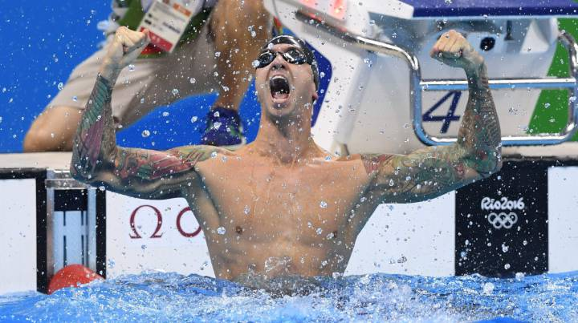

Los Mundiales de natación de Gwangju 2019 están siendo históricos en términos de récords. Con seis jornadas disputadas, han caído seis récords del mundo, tres de ellos en un viernes memorable especialmente para la natación rusa.
La primera marca en derribarse la logró Adam Peaty en 100 metros braza. El británico, que ya era el plusmarquista mundial en la distancia, empezó en la primera jornada del Mundial con con un 56.88, convirtiéndose en el primer hombre en bajar de los 58 en esta distancia como ya había sido el primero en bajar de 57.

Relacionados
Tres días después, el húngaro Kristof Milak batió la histórica marca de los 200 metros mariposa que estaba en posesión de Michael Phelpsdesde 2009. Este joven nadador de 19 años de la misma escuela que ya sacó a la legendaria Katinka Hosszu bajó el tiempo del tiburón de Baltimore en 88 centésimas para dejar la nueva marca en 1:50.73.